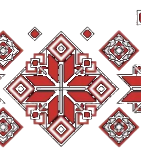
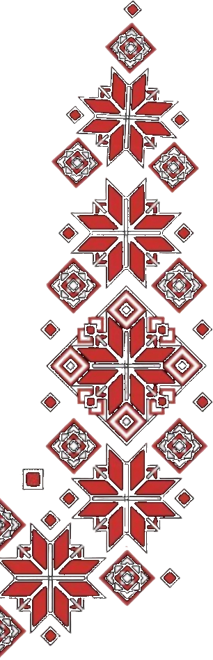
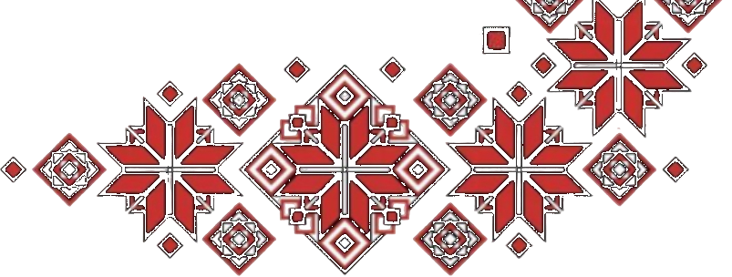

Le Petit Chef — Yerevan
Le Petit Chef — Yerevan
Наша заметка: Высокая кухня
📍 1 Amiryan St, Yerevan 0010, Armenia★ 4.8💳 ֏30,000–50,000 / чел · ≈ €73–121

Места для наших поездок


Рестораны, пабы, кафе и кофейни
Наша заметка: Высокая кухня
Наша заметка: Каменная таверна с национальным уклоном в блюдах и интерьере
Наша заметка: Ресторан с летником
Наша заметка: Мясной ресторан
Наша заметка: Ресторан с очень клевыми фотками национальной еды
Наша заметка: Индийская кухня
Наша заметка: Очень большой ресторан с панорамными окнами и классными фотками еды
Наша заметка: Современная таверна
Наша заметка: Большой красивый современный ресторан с большим деревом в центре
Наша заметка: Очень крутое современное место с традиционной кухней и много мяса
Наша заметка: Мастхэв к посещению ресторан в виде квартиры 19 века
Наша заметка: Очень большой ресторан в восточном стиле
Наша заметка: Хороший современный ресторан с нац кухней
Наша заметка: Таверна кавказской кухни с хинкалями и жиреем супом хаш
Наша заметка: Стейк хаус
Наша заметка: Роллы итальянская кухня коктейли
Наша заметка: Британский паб с пивом
Наша заметка: Пиво пицца много места
Наша заметка: Большой пивной ресторан
Наша заметка: Базовая кафешка
Наша заметка: Легкая летная кафешка с пиццей и итальянскими блюдами
Наша заметка: Кофейня
Наша заметка: Кофейня
Наша заметка: Кофейня
Наша заметка: Кофейня
Наша заметка: Кофейня
Наша заметка: Кофейня
Наша заметка: Кофейня
Наша заметка: Кофейня
Наша заметка: Кофейня
Наша заметка: Кофейня
Наша заметка: Парк
Наша заметка: Парк
Наша заметка: Парк
Наша заметка: Парк
Наша заметка: Опера и театр
Наша заметка: Музей иллюзии
Наша заметка: Performing arts theatre
Наша заметка: Cinema
Наша заметка: Рынок ручной работы
Наша заметка: Иранский магазин
Наша заметка: Винтажка
Наша заметка: Книжный
Наша заметка: Сувенирка
Наша заметка: Антикварщина
Наша заметка: Национальная галерея Армении
Наша заметка: 1000 ступеней с видом на Арарат